101 — はじめての再帰的テーマ分析
このチュートリアルでは、夜勤で働く人たちへの架空のインタビュー3件とアンケート1件を使って、データの取り込みから論文の原稿の書き出しまで、再帰的テーマ分析の6つのフェーズをひととおり体験します。操作を覚えることと同じくらい、アプリがなぜそう作られているかを知ってもらうことを大切にしています。
0はじめに5分
用意するもの
- パソコンと、新しめのブラウザ（Chrome・Edge・Firefox・Safari）
- 練習用データ：practice-data-ja.zip（展開すると4つのファイルが入っています）
interview_P01.txt・interview_P02.txt・interview_P03.txt— 病院や介護施設で夜勤をする3人へのインタビューsurvey.csv— 10人へのアンケート（年代・職種・夜勤の形態と、2つの自由記述）
人物・職場・回答はすべて架空のものです。オフライン版の .zip にも samples/tutorial/ja/ として入っています。
- コーディングは解釈です。正解のコードがあるわけではなく、研究者の視点は取り除くべき偏りではなく、分析の資源です。
- テーマは「見つかる」ものではなく、研究者が「生成する」ものです。テーマは話題の要約ではなく、核となる意味（中心概念）を軸にまとまった「共有された意味のパターン」です。
- 6つのフェーズは行き来しながら進みます。テーマを見直しているうちにコーディングに戻る、ということが普通に起こります。
このアプリの多くの設計（数を隠す、一致率を出さない、省察を残す）は、この3つから来ています。
1アプリを開いて、プロジェクトを設定する3分
アプリはこのサイトの アプリを開く からすぐに使えます。インターネットにつながっていない環境では、リリースページのオフライン版を展開して ta_canvas.html をダブルクリックします。
データはブラウザの中に、開いた場所ごとに保存されます。オンライン版で作ったプロジェクトは、オフライン版からは見えません（逆も同じ）。どちらか一方に決めて使い、移すときはバックアップと復元を使ってください。
- アプリを開くと、最初にプロジェクト設定が出ます。
- プロジェクト名に「夜勤で働く人たちの経験」、リサーチクエスチョンに「病院や介護施設で夜勤をする人たちは、夜に働くことをどのように経験しているか。」と入力して保存します。
- 画面上部の分析者欄に、自分のイニシャルを入れます。以後の操作とジャーナルに、この名前が記録されます。
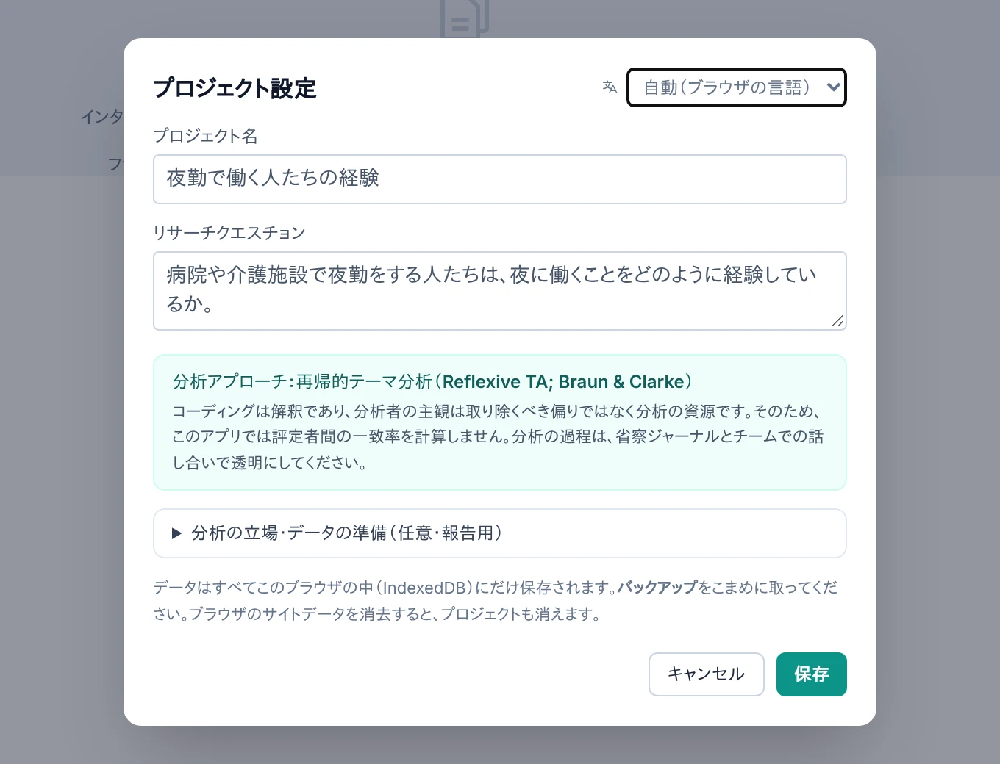
2データを取り込む5分
取り込んだファイルは、一度だけ「固定した文章」に変換されます。コードは文章の中の文字の位置を指すので、取り込んだ後に文章が変わることはありません。
- 左上の取り込みを押して、3つのインタビュー（
.txt）を選びます。画面にファイルをドロップしても取り込めます。 - 続けて
survey.csvを取り込みます。列を選ぶ画面が出るので、参加者IDが「ID」、コーディングするが2つの自由記述、属性が年代・職種・夜勤の形態になっていることを確かめて取り込みを押します。 - 文書一覧で
interview_P01.txtを開き、話者を検出を押し、確認が出たら OK を押します。「I：」で始まる行は聞き手、「P01：」で始まる行は P01 の発言としてタグが付きます。P02・P03 でも同じようにします。 - 左の参加者一覧で P01 にマウスを重ね、鉛筆のアイコンから属性を入れます。1行に1つ、
年代: 40代、職種: 看護師、夜勤の形態: 2交代のように書きます。P02 は「30代・介護福祉士・一人夜勤」、P03 は「20代・看護師・2交代」です。
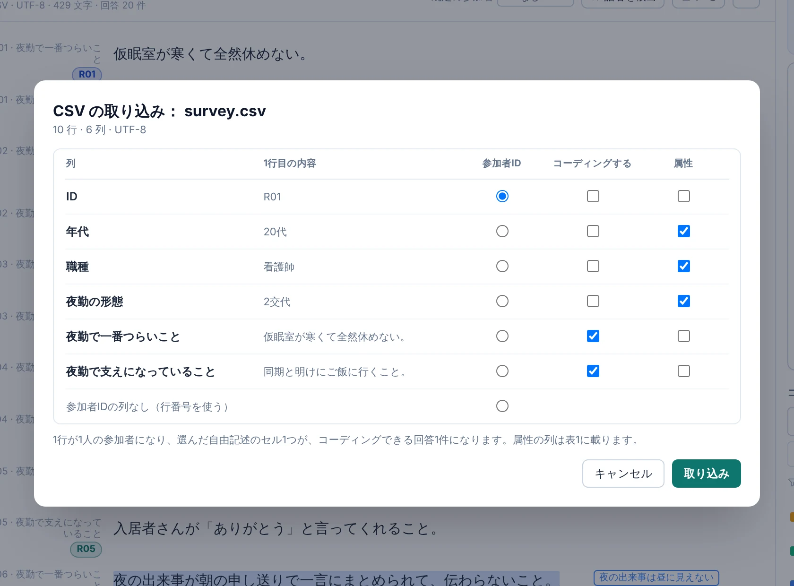
誰が話したかは解釈ではなく事実なので、コードとは別の層として持っています。聞き手（I、インタビュアー、司会など）は自動で聞き手として扱われ、参加者の数には含まれません。1人だけの個別インタビューなら、文書ごとに既定の参加者を選ぶだけでも構いません。
3フェーズ1：データに慣れる5分
タブ1 · データに慣れる・コーディングコードを付け始める前に、まずはデータ全体を読みます。繰り返し読み、気づいたこと、疑問、自分自身の反応をメモしておきます。
- 3つのインタビューとアンケートを、コードを付けずに最後まで読みます。
- 文書の上のメモを押し、第一印象を書きます。例：「『最後の砦』という言葉が強く残った。責任の話なのに、語り口は淡々としている。」
- Ctrl+J（Mac は ⌘+J）で省察ジャーナルを開き、種類を研究者自身の社会的な立場（ポジショナリティ）にして、このテーマと自分との関係を書いてみます。例：「自分も夜勤経験者なので、自身の経験と照らし合わせつつも、参加者の固有の語りを自分の経験に引き寄せすぎないよう意識する。」
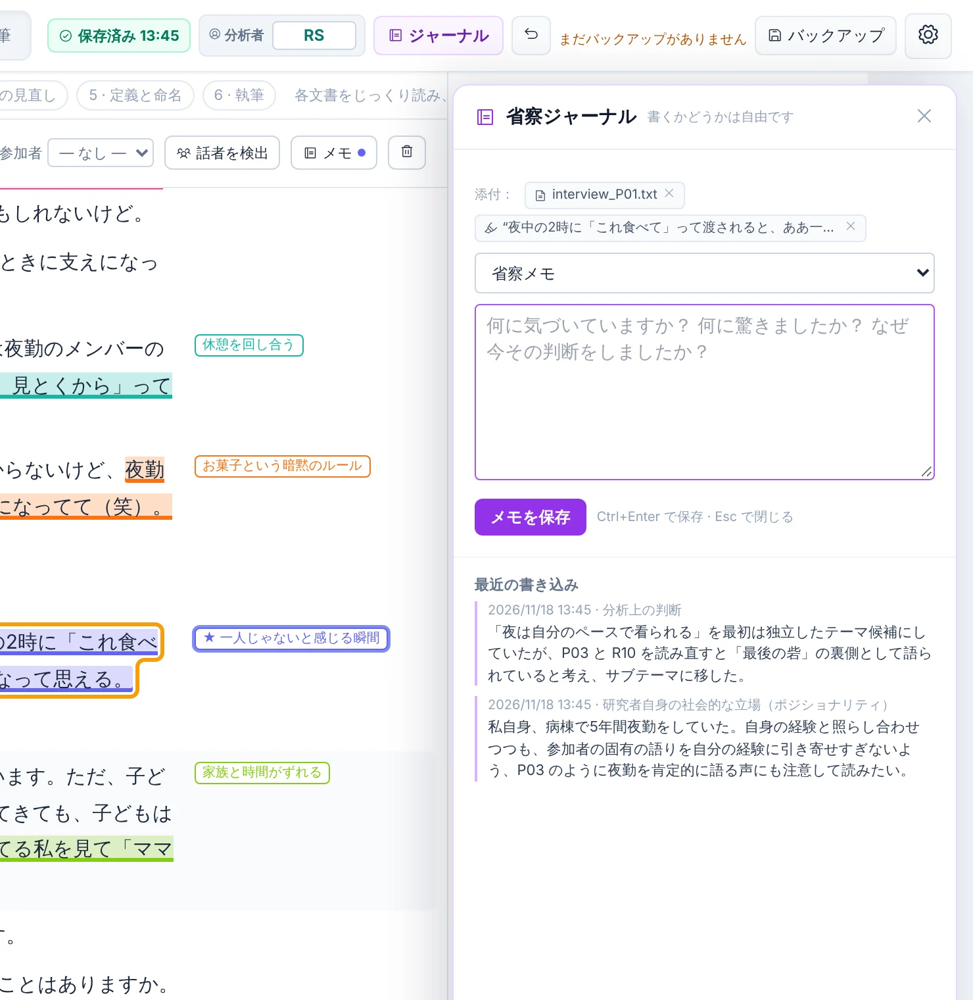
4フェーズ2：コーディング10分
タブ1 · データに慣れる・コーディングデータ全体を系統的にコーディングします。コードは、研究の問いに関係しそうな意味を捉える「分析の道具」で、途中で名前を変えたり、統合したり、分けたりしてかまいません。
基本の操作
- P01 の「夜は自分が最後の砦なんだと思います」の部分をマウスで選びます。
- そのままキーボードで「最初の判断は自分たち」と打ち、Enter を押します。新しいコードができ、選んだ部分に付きます。
- もう一度同じ部分を選び、右側のインビボ・コードを押してみます。選んだ言葉そのものが名前のコード（「夜は自分が最後の砦なんだと思います」）ができます。インビボ・コードは、参加者の言葉をそのまま残したいときに使います。
- P02 の「コールが二つ同時に鳴ったら、どっちに先に行くか、自分で決めないといけない。」を選び、右の一覧から「最初の判断は自分たち」をクリックします。既存のコードはクリックで付けられます。
- コードを本文の行にドラッグすると、その行（アンケートなら回答）全体にコードが付きます。
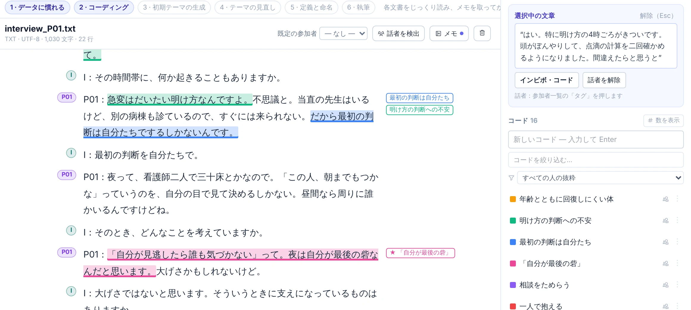
抜粋を開いて、印・メモ・範囲を整える
色の付いた部分をクリックすると、その「コーディングした抜粋」が右側に開きます。重なった抜粋は、クリックするたびに切り替わります。
- ★ 代表抜粋：論文で引用したい抜粋に印を付けます。表の「代表的な抜粋」には、この印を付けた抜粋だけが載ります（自動では選びません）。
- 分析メモ：その抜粋について考えたことを書きます。
- 別のコードを追加：1つの抜粋に複数のコードを付けられます。抜粋どうしが重なってもかまいません。
- 範囲を変える：抜粋を開いたまま文章を選び直し、開いている抜粋の範囲をこの選択にするを押します。行全体で、その行全体に広げることもできます。コード・メモ・印はそのまま残ります。
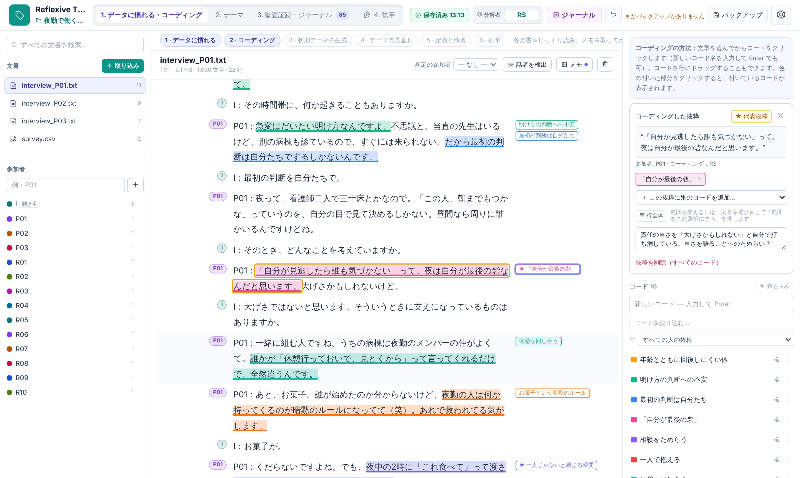
データ全体を検索する
- 左上の検索欄（Ctrl+F）に「一人」と入力します。
- すべての文書から見つかった箇所が、前後の文脈つきで並びます。クリックすると、本文のその場所に移ります。Enter で次へ、Shift+Enter で前へ。
- 「一人夜勤」「一人じゃない」「一人暮らし」……同じ言葉でも、意味がまったく違うことに気づくはずです。
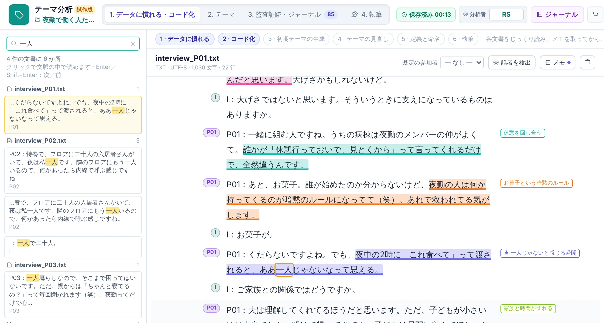
検索で見つかった箇所に機械的にコードを付けると、言葉の出現を数えることになってしまいます。検索は、データ全体を読み直すための入り口として使ってください。
コードを整理する：名前の変更・統合・分割
コーディングが進むと、似たコードをまとめたくなったり、1つのコードに別々の意味が混ざっていると気づいたりします。コードの右の ⋮ から編集画面を開きます。
- 名前・説明・色を変えられます。
- 統合：別のコードを選んで保存すると、このコードの抜粋がすべてそちらに移ります。
- 分割…：別の意味を捉えている抜粋にチェックを付け、新しいコード名を入れます。チェックした抜粋だけがそのコードに移ります。
- 理由欄（任意）に書いたことは、監査証跡に判断の理由として残ります。
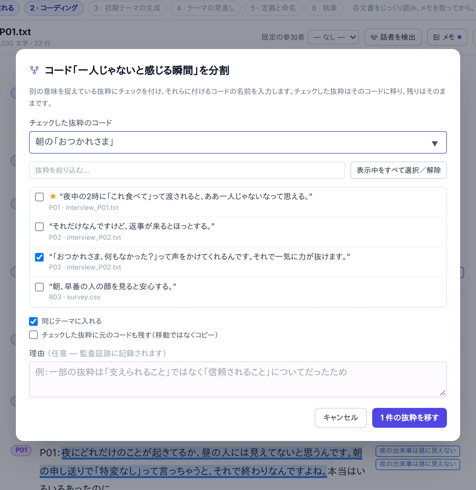
コードやテーマに付いた抜粋数・参加者数は、初期設定で隠しています。数がいつも見えていると、「多い＝重要」という読み方に引っ張られるからです。必要なときは数を表示で一時的に出せます。
このまま残りのデータもコーディングします。時間がなければ、15個前後のコードを作ったところで次へ進んでかまいません。
5フェーズ3：初期テーマの生成5分
タブ2 · テーマコードを見渡し、テーマの核となる意味（中心概念）を共有するコードを集めて、候補テーマを作ります。
- 上部の2. テーマタブを開きます。左にコードの一覧があります。
- 新しい候補テーマに「夜の責任」と入れ、＋ テーマを押します。
- 「最初の判断は自分たち」「相談をためらう」「一人で抱える」などのコードを、テーマカードにドラッグします（カードの＋ コードを追加…から選んでも入れられます）。
- 同じように、同僚どうしの気づかいに関するコードで2つ目のテーマ、家族や生活時間に関するコードで3つ目のテーマを作ります。
- コードをクリックすると、その抜粋を読み直せます。1つのコードを複数のテーマに入れることもできます。

テーマにはそれぞれ候補・見直し済み・定義済み・保留というステータスがあります。あるテーマは定義済みなのに、別のテーマはまだ候補、ということがあって当然です。ステータスは順番にこなす手順ではなく、前にも後ろにも動かせます。定義済みのテーマを見直し済みや候補に戻すのも、行き来しながら進む分析の自然な一部です。
6フェーズ4：テーマの見直し5分
タブ2 · テーマ候補テーマを、2つの水準でデータと照らし合わせます。1つは「そのテーマのコーディングした抜粋が、まとまっているか」、もう1つは「データ全体に戻ったとき、そのテーマが意味のあるものを捉えているか」です。
- 「夜の責任」のカードで抜粋を表示を押し、抜粋を通して読みます。カードの見直しの欄にある2つの問い（抜粋どうしのまとまり、データ全体との関係）を手がかりに、気づいたことを見直しメモに書きます。チェック欄はありません。照合は済ませる手続きではなく、考えるための問いだからです。
- 左のコード一覧の上にある絞り込み（すべての人の抜粋）で「職種: 介護福祉士」を選びます。介護福祉士の語りだけが表示され、病院の看護師とは違う「一人夜勤」の重さが見えてきます。
- タブ1に戻って「好き」で検索してみます。P03 は「夜勤のほうが好き」と語っています。責任は重荷であると同時に、「任されている」手応えでもあるようです。
- この気づきをテーマに反映させます。例えば「任されることの手応え」を＋ サブテーマとして作り、関係するコードを移します。何を変えたか、なぜかを見直しメモに書きます。
- テーマのステータスを見直し済みに変えます。下に小さな入力欄が出て、理由を書けます（書かなくても数秒で消えます）。
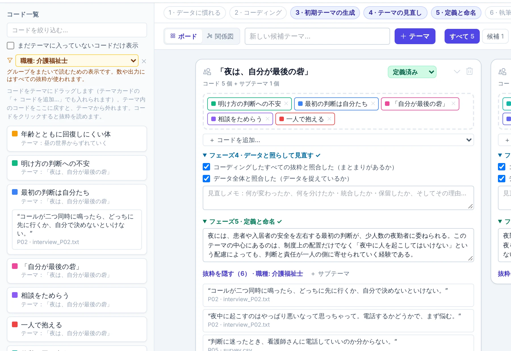
絞り込みは、あるコードがグループごとにどう語られているかを読み比べるための表示です。数や出力には影響しません。グループ間の違いを件数で示すと、再帰的テーマ分析の考え方から外れてしまうからです。
テーマに収まりきらない語り（ここでは P03）は、テーマを捨てる理由にも、無視してよい例外にもなりません。テーマの境界や深さを考え直す手がかりです。
7フェーズ5：定義と命名5分
タブ2 · テーマテーマごとに、テーマの核となる意味（中心概念）、その範囲と境界、他のテーマとの関係を書き、テーマが語る物語を表す名前を付けます。
- 「夜の責任」のカードでフェーズ5 · 定義と命名を開き、定義を書きます。例：「夜には、安全を左右する最初の判断が少人数の夜勤者に委ねられる。このテーマの中心にあるのは、判断と責任が一人の側に寄せられていく経験である。」
- テーマ名を、話題の見出しから物語を伝える名前に変えます。例：「夜の責任」→「『夜は、自分が最後の砦』」。参加者の言葉を使ってもかまいません。
- ステータスを定義済みにします（定義がないまま選ぶと、先に定義を書くよう案内されます）。
- 関係図に切り替え、テーマをドラッグして配置します。テーマをつなぐで2つのテーマを順にクリックし、線をクリックして関係に名前を付けます（例：「支えがあるから越えられる」）。
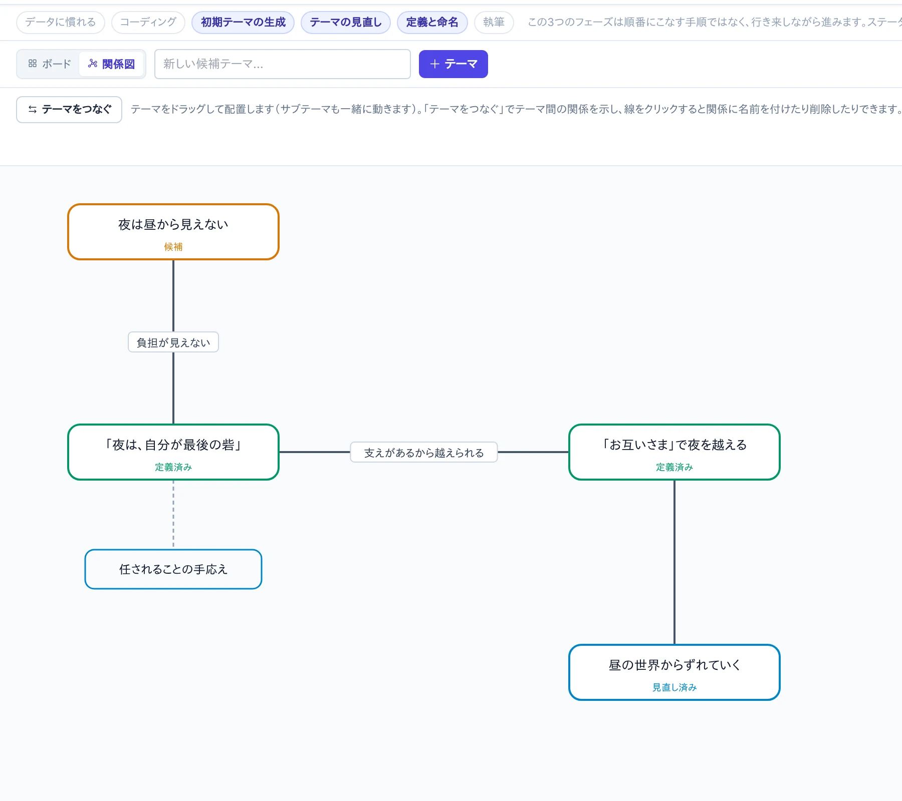
テーマの名前、サブテーマ、テーマの数については、「何個まで」といった目安は示さず、問いの形で添えています（名前は物語を伝えているか、サブテーマは中心概念の重要な側面か、どのテーマにも厚みがあるか）。どれも作業を止めることはなく、どう答えるかは研究者が決めます。
8フェーズ6：執筆5分
タブ4 · 執筆フェーズ6は、表を作ることではなく、書くことです。書くこと自体が分析の一部なので、このタブは表ではなく「分析の記述」の画面から始まります。
- 4. 執筆タブを開きます。
- 分析の全体像に、テーマ全体が研究の問いに対してどんな物語を語るかを2〜3文で書きます。
- 各テーマの欄に、そのテーマの分析の記述を書きます。使える抜粋を開き、引用したい抜粋の挿入を押すと、カーソルの位置に入ります。
- 最後の全体のまとめ：テーマ間のつながりと考察に、分析全体を通して何が言えるのか（研究の問いへの答えや意義）を書きます。
- 左の原稿と表（.docx）を押すと、記述・関係図・表・付録が Word ファイルになります。
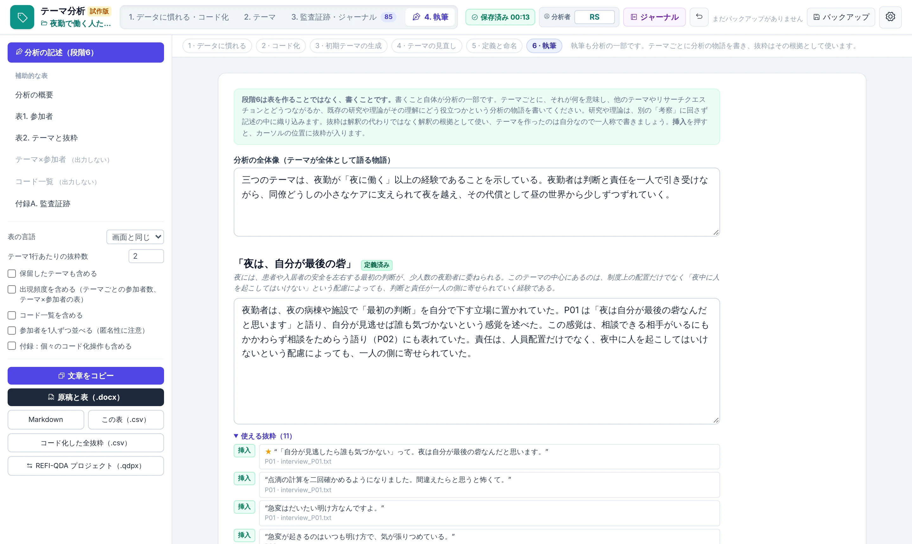
出現頻度（テーマごとの参加者数、テーマ×参加者の表）とコード一覧は、初期設定では出力しません。参加者の特性も、匿名性を守るために1人1行ではなくグループとしてまとめて示します。どれも左のチェックで含められますが、本当に必要かを考えてから使ってください。
9記録を見返して、バックアップする3分
タブ3 · 監査証跡・ジャーナルここまでの操作は、すべて自動で記録されています。
- 3. 監査証跡・ジャーナルタブを開きます。コードの作成・統合・分割、テーマのステータスの変更、書いた理由やジャーナルが時系列で並んでいます。
- ジャーナルの書き込みにあるその時点の構造を押すと、そのときのテーマ構造と、その後の変化を見られます。
- 上部のバックアップを押して、プロジェクト全体を
.jsonファイルに保存します。バックアップの左に「最終バックアップ：たった今」と表示されます。
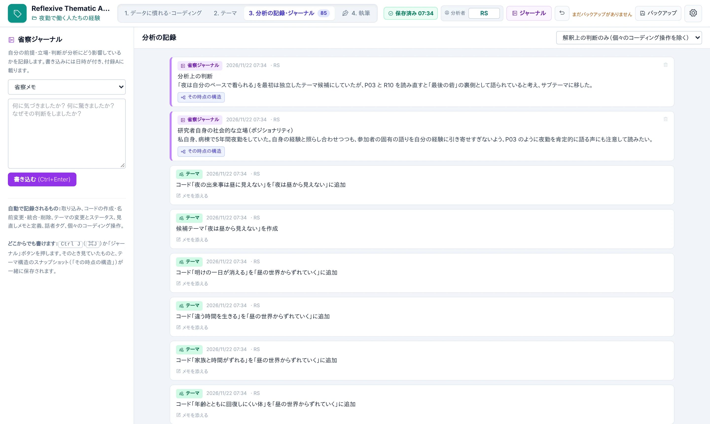
データはブラウザの中にだけあります。ブラウザの「サイトデータの削除」をすると、プロジェクトも消えます。バックアップファイルには文書の全文が入っているので、生データと同じように大切に保管してください。戻すときは、右上の歯車からバックアップから復元を選びます。
✓まとめ
お疲れさまでした。このチュートリアルで、次のことを体験しました。
- 文章とアンケートを取り込み、話者と属性を整える
- データに慣れ、メモと省察ジャーナルを書く
- コードを付け、全文検索で読み直し、コードを統合・分割する
- 候補テーマを作り、抜粋とデータ全体に照らして見直す
- テーマを定義し、物語を伝える名前を付け、関係図を描く
- 分析の記述を書き、Word の原稿として書き出す
- 監査証跡を確かめ、バックアップを取る
練習が終わったら、右上の歯車の新規作成／リセットで空のプロジェクトに戻せます（先にバックアップを取っておくと、あとで見返せます）。
次に読むもの
- 使い方ガイド — すべての機能、キーボード操作、データの保存、複数人での分析、よくある質問
- RTARG との対応表 — 再帰的テーマ分析の報告ガイドラインの各項目に、アプリがどう対応しているか
参考文献
- Braun, V., & Clarke, V. (2006). Using thematic analysis in psychology. Qualitative Research in Psychology, 3(2), 77–101.
- Braun, V., & Clarke, V. (2019). Reflecting on reflexive thematic analysis. Qualitative Research in Sport, Exercise and Health, 11(4), 589–597.
- Braun, V., & Clarke, V. (2022). Thematic analysis: A practical guide. SAGE.
- Braun, V., & Clarke, V. (2024). Supporting best practice in reflexive thematic analysis reporting in Palliative Medicine: A review of published research and introduction to the Reflexive Thematic Analysis Reporting Guidelines (RTARG). Palliative Medicine, 38(6), 608–616.